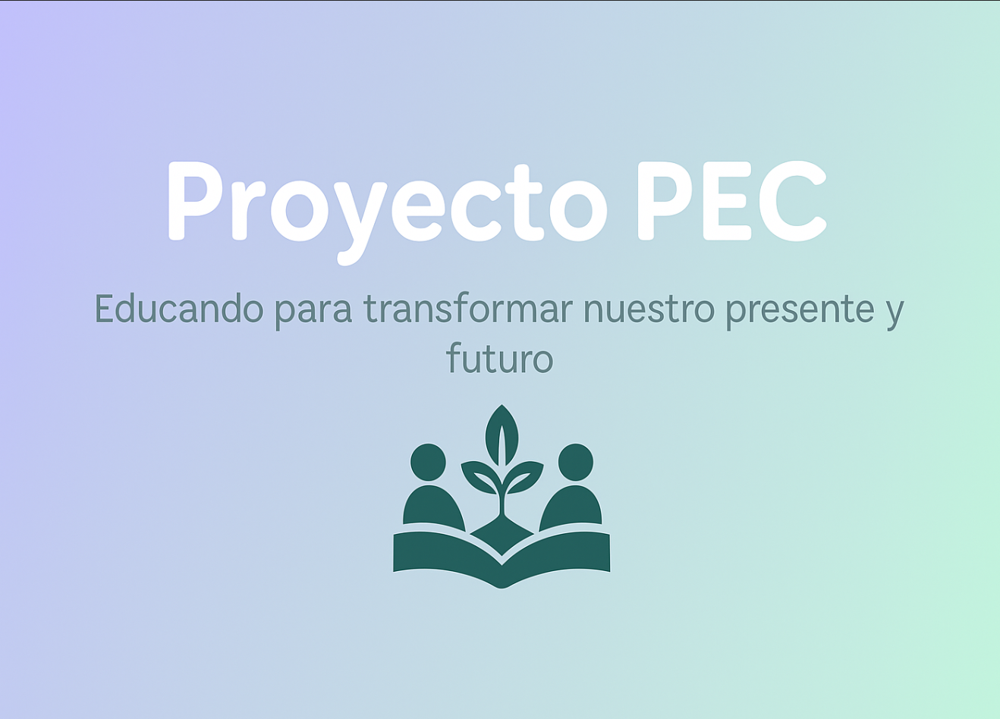

El Proyecto Educativo Comunitario (PEC) busca mejorar la calidad educativa y fomentar valores sociales en estudiantes y comunidades escolares.
"Educar no es llenar una vasija, sino encender un fuego." – William Butler Yeats
El Proyecto PEC nace de la necesidad de fortalecer la conciencia social, la colaboración entre estudiantes y el compromiso con nuestra comunidad. Su propósito es dejar huella no solo en los espacios educativos, sino también en las personas que forman parte de ellos.